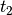
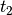

liebTB code
liebTB module models a line centered squared lattice (Lieb lattice)
with real and/or complex valued hoppings and onsite energies.
liebTB is available at https://github.com/cpoli/TB
-
class
liebTB.eigLieb(lat)[source]
Child of the class eigTB. Dedicated to the Lieb lattice.
-
set_hop_alt(ta, tb, tc, td)[source]
Get the nearest hoppings of the Lieb lattice with alternating hoppings
and, the next nearest hoppings. As the next nearest hoppings are
diagonal hoppings, the value of the diagonal between  and  is given by .
and  is given by .
| Parameters: |
- ta – Value of the math:t_{ab} hoppings.
- tb – Value of the math:t_{ba} hoppings.
- tc – Value of the math:t_{ac} hoppings.
- td – Value of the math:t_{ca} hoppings.
|
|---|
-
set_hop_alt_nn(nn)[source]
Get the next nearest hoppings if the Lieb lattice has alternating hoppings.
| Parameters: | c – Strength of the diagonal hoppings. |
|---|
-
set_dim_defect(dim_x=-1, dim_y=-1)[source]
Set dimerization defects along  and/or
and/or  .
.
| Parameters: |
- dim_x – Default value -1 (no defect). Dimerization along site index.
- dim_x – Default value -1 (no defect). Dimerization along site index.
|
|---|
-
set_disorder_uniform(alpha)[source]
Set a non generic disorder.
Disorder uniform along math:y for math:t_{ab} and math:t_{ba},
and uniform along math:x for math:t_{ac} and math:t_{ca}.
| Parameters: | alpha – Stength of the disorder. |
|---|
Note
This disorder preserves the zero mode.
-
set_disorder_pair(alpha)[source]
Set a non generic disorder.
| Parameters: | alpha – Stength of the disorder. |
|---|
Note
This disorder preserves the zero mode.
-
set_disorder_placket(alpha)[source]
Set a non generic disorder.
| Parameters: | alpha – Stength of the disorder. |
|---|
Note
This disorder preserves the zero mode.
-
set_magnetic_field(nx)[source]
Add Pierls phases to the hoppings.
| Parameters: | nx – Number of sites along math:x. (Input of the class latticeTB) |
|---|
Note
This disorder preserves the zero mode.
-
class
liebTB.plotLieb(sys)[source]
Plot the output of the class latticeTB and the class eigTB.
-
plt_lattice_hop(ms=20, lw=1)[source]
Plot the coordinates of the Lieb lattice sites in hoppings space.
:param hop: Hoppings.
:param nx: Number of sites along .
:param ny: Number of sites along .
:param ms: Default value 20. Markersize.
-
plt_dispersion(ta, tb, tc, td, nn=0.0, fs=20, N=100)[source]
Plot the relation dispersion of the Lieb lattice.
| Parameters: |
- ta – Hoppings.
- nx – Number of sites along .
- ny – Number of sites along .
- ms – Default value 20. Markersize.
|
|---|
-
liebTB.equations(p, param)[source]
Get the intersection of the points at the extremity of two segments.
Used to build up the lattice in hopping space.